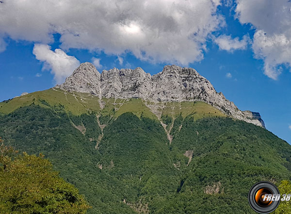

Randonnée à la Dent d'Arclusaz

Description
La Dent d'Arclusaz est une randonnée spectaculaire offrant des vues panoramiques sur les massifs des Bauges et de la Chartreuse. Cette ascension difficile récompense les randonneurs avec des paysages à couper le souffle et une flore alpine variée.
Le sentier commence dans la forêt et monte progressivement à travers des alpages jusqu'à atteindre une crête rocheuse. La dernière partie de l'ascension est plus technique et nécessite une bonne condition physique. Au sommet, vous serez récompensé par une vue à 360° sur les Alpes environnantes.
Points d'intérêt
Col du Potat (1351 m)
Pierre Besse (1730 m)
Col de Cochette (1955 m)
Sommet de la Dent d'Arclusaz (2041 m) avec sa grande croix métallique
Vue panoramique sur la Plaine de l'Isère, le Massif des Bauges, Belledonne et la Chartreuse
Vallon d'Arclusaz et ses chalets d'alpage
Détail du trajet (par le col du frêne)
Le large sentier débute derrière le Mémorial (panneaux) et monte NE en sous-bois. Peu après la clairière de Pré Ballet, à la côte 1.065 m, le sentier coupe la piste pastorale (interdite à la circulation) qui part du village de Routhennes et dessert le Chalet du Potat.
De ce point, on peut continuer sur le sentier (itinéraire conseillé) qui suit la Crête de la Via ou emprunter la piste jusqu’au chalet d’alpage (on peut réserver cette variante pour la descente). Le sentier de crête, large et bien tracé, permet d’entrevoir les sommets de l’W du Massif des Bauges (Mont Margeriaz, Mont Morbié, Rochers de la Bade, Mont Colombier) tout au long de la montée et rejoint la piste à proximité du Chalet du Potat (1.382 m).
Après une courte descente, la piste se termine au Col du Potat qui s’ouvre sur les alpages des villages de Sainte-Reine et d’Epernay. Du Col (1.351 m - panneaux), l’itinéraire se poursuit E sur un sentier, toujours bien tracé, qui monte en lacets dans une pente boisée, puis herbeuse. On atteint le rocher isolé de "Pierre Besse" (1.730 m) sous la falaise de l’Arclusaz, puis le sentier continue en lacets, franchit ensuite la croupe et fait une boucle SE avant de revenir NE pour traverser en direction du Col de Cochette (1.955 m), dont l’échancrure dans la falaise est bien visible, à l’aplomb de la petite croix qui marque l’antécime de la Dent d’Arclusaz.
Le sentier se faufile dans cette faille (prudence en cas de temps humide car la terre et les rochers « lissés » et instables rendent la progression malaisée) qui se rétrécit et se redresse nettement sur quelques mètres (présence d’un câble, bien utile) avant de déboucher sur l’arête.
De ce point, le sentier s’oriente S en direction du sommet et traverse une zone pentue, mi-herbeuse, mi-rocheuse, qui réclame la plus grande attention (les passages les plus ardus sont sécurisés par des main-courantes câblées - remises en état en 2016)
On rejoint la sente qui arrive E du Vallon d’Arclusaz (itinéraire difficile) puis on atteint en quelques minutes la grande Croix métallique (et haubanée) qui matérialise le sommet de la Dent d’Arclusaz (2.041 m). Il est possible de marquer son passage en laissant un mot sur le carnet à l’abri dans un "tuyau" sous la croix.
Du sommet, vue « époustouflante » sur la Plaine de l’Isère, les principaux sommets du Massif des Bauges (Mont Colombier, Mont Pécloz, Mont d’Armène, Pointe d’Arcalod, Mont Trélod), le Massif de Belledonne, la Chartreuse et le beau Vallon d’Arclusaz et ses chalets d’alpage.
Retour par le même itinéraire jusqu’au Chalet du Potat puis, au choix, par le sentier emprunté à l’aller ou par la piste jusqu’en amont de Pré Ballet.
Itinéraire
Retour à la liste des randonnées